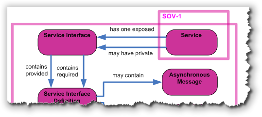
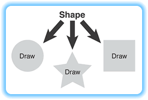
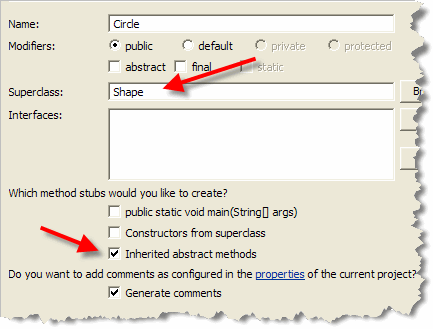
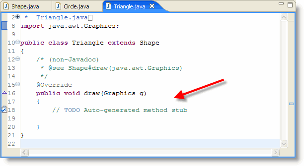
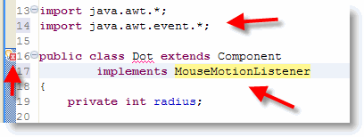
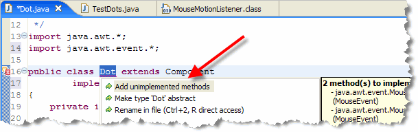

The classes you've used so far—ordinary classes, if you will—are called concrete classes. Java also allows you to create a second kind of class, called an abstract class.
 An abstract class is usually an incomplete class,
a class that contains certain methods that are specified,
but not implemented in the definition of the class.
Because the abstract class contains these incomplete methods, it
cannot be used to create objects—it can only be used as a
superclass when defining other classes. That is, it only
makes sense in the context of inheritance.
An abstract class is usually an incomplete class,
a class that contains certain methods that are specified,
but not implemented in the definition of the class.
Because the abstract class contains these incomplete methods, it
cannot be used to create objects—it can only be used as a
superclass when defining other classes. That is, it only
makes sense in the context of inheritance.
Two Types of Inheritance
Back in the first unit of this lesson, you learned that inheritance is a form of specialization with the new subclass inheriting both the methods and the instance variables from it's superclass, while optionally adding more of both. Thus we can say that the subclass isA specialized form of the more generic superclass.
There's actually a second form of inheritance, though, called
specification inheritance. In constrast to the extension
relationship, which we've been using up to this point,
a superclass may simply specify a set of responsibilities
that a subclass must fulfill, but not provide any actual
implementation.

In this case, the only thing inherited is the interface (or method signatures) from the superclass.The most common way that this specification relationship is used is in combination with regular extension. In this form,
- the subclass inherits the interface of the superclass, as it does in specification,
- but it also inherits a default implementation of, at least, some of its methods.
In this form of inheritance, the subclass may override an inherited method to provide specialized behavior, or it may be required to provide an implementation for a particular method, which could not be provided in the superclass. This form of inheritance is often called polymorphic inheritance, because its principal value lies in its ability to provide specialized behavior in response to the same messages.
Polymorphic Inheritance

Suppose, for instance, that you want to create a drawing program, like Visio, that can draw all kinds of shapes. When writing your program, you might have an abstractShape
superclass that doesn't have the faintest notion of how to
implement its abstract draw() method, yet it knows that
each of its concrete children will need to do so.
Only the concrete
classes derived from Shape—Circle,
Square, and Star—for instance,
possess the necessary knowledge to actually draw()
themselves.
So, abstract classes provide a way of guaranteeing that an object of a given type will understand a given message. In that sense, they specify a set of responsibilities that a subclass must fulfill. This is important, because a Java program that tries to send a message to an object that doesn't understand the message will malfunction.
Interfaces perform a similar role, and you'll learn more about them in the next section. Interfaces, though, are a type of pure specification. Abstract classes can also contain fields and regular methods, though, so unlike an interface they can provide a default implementation of a capability that their subclasses are intended to perform.
Creating Abstract Classes
Creating an abstract class is as simple as including
the keyword abstract in the header of an otherwise ordinary
class. Here's a simple abstract class that represents shapes
that can be drawn on a display:
abstract public class Shape
{
int x, y;
// class body goes here
}
The Shape class contains fields that can be used to
store its location on the display (x,y).
Abstract Methods
In addition to regular fields and methods, an abstract class
may also contains one or more abstract methods.
An abstract method includes the keyword abstract
in the method header, and doesn't include a method body.
In place of the body, you simply put a semicolon (;).
Here's the Shape class
along with its abstract method:
abstract public class Shape
{
int x, y;
// class body goes here
abstract public void draw(Graphics g);
}

Adding More Methods
Abstract classes are not restricted to abstract
methods like the draw() method in the
Shape class; you can have as many regular methods as you'd
like, freely mixed in with your abstract methods.
The Shape class, for instance, could easily have
a setLocation() method, like that shown in
this UML diagram.
Extending Abstract Classes
When you extend an abstract class, your new subclass should override every abstract method in its superclass, giving each a concrete implementation. The resulting subclass is a concrete class, and it can be used to create new objects.

Let's look at an example. To create theCircle or
Square classes in Eclipse, all you need to do is
to:
- specify the
Shapeclass as the superclass. - make sure that the "Inherited abstract methods" checkbox is selected.
When you do that, Eclipse will generate the "boilerplate" code
that you'll need to make Circle into a concrete class.
This consists of a method stub for each of the abstract
methods defined in the superclass; in our case, that's only
the draw() method.
Here's what the auto-generated code looks like in Eclipse for a
Triangle class:

All you need to do is to do is add the code where indicated by the comments. Of course, in reality, you'll probably want to do a lot more. TheCircle class, for instance, might have a
radius field, the Square class
could have fields for width and height,
and the Triangle class could have fields and methods
for base and height.
Here's an applet created by a student at Chico State, that puts these ideas together into a simple drawing program.
Interfaces?
An interface is like an extremely abstract class—one that contains only abstract methods. Because all of its methods are abstract, you can never create an object directly from an interface, just as you can't directly create an instance of an abstract class.
An abstract class allows a designer to provide
general behavior in the abstract class, while forcing those
who extend the class to define particular methods (such as
the draw() method in the last section) before
they can create objects. An interface works the same way,
except it doesn't provide any behavior; it only specifies
what methods must be implemented.
Pure Specification
If we think of regular inheritance as specialization and abstract classes as specification, you may find remaining places where you want to factor out common behavior. The problem is that the objects sharing that common behavior are otherwise unrelated. When this happens, that's where Java's facility for writing pure specification, the Java interface, comes into play.
The interface mechanism differs from the forms of inheritance we have discussed so far in three important ways:
- When a class
implementsaninterface, it doesn’t receive any method implementations or nonfinal fields from the interface. Interfaces can be used to define inherited constants, but they can’t be used to define nonconstant data. Any fields defined within an interface are implicitlyfinal. - Unlike inheritance, a class may
implementseveral interfaces. This facility can be used to simulate multiple inheritance, where a subclass inherits behavior from each of several superclasses. This is the only way to model this kind of relationship in Java, which supports only single inheritance (every class other thanObjecthas exactly one direct ancestor). - Classes that
implementthe same interface don’t need to be substitutable in the Liskov sense, except with respect to the interface they implement. Thus, if a classimplementstheRunnableinterface, it isARunnableobject, and it can be used anywhere aRunnableobject is expected.Runnableobjects don’t have to be otherwise related, however. Because theyimplement Runnable, they must have arun()method; otherwise the class won’t compile. There’s no guarantee they’ll have any other methods or fields in common.
Why Interfaces Are Useful
An interface doesn't specify anything about how a class must implement a particular method—only that it must contain a particular set of methods having a particular signature.
 When a class declares that it implements an
interface, it makes a binding promise to provide a concrete
implementation of every method of the interface. You can
think of this promise as a contract. If you use an object
that implements a particular interface, you know that it
can respond to any method that the interface requires.
When a class declares that it implements an
interface, it makes a binding promise to provide a concrete
implementation of every method of the interface. You can
think of this promise as a contract. If you use an object
that implements a particular interface, you know that it
can respond to any method that the interface requires.
If a class fails to make good on its promise, the Java compiler will reject it. Thus, like abstract classes, interfaces make it possible to pre-determine that a given class will understand a particular set of methods. But, because a class can implement several interfaces, interfaces allow you to pre-determine that a given class will understand several entire sets of methods. The trade- off is that an interface cannot include even one concrete method.
Mix-ins and Multiple Inheritance
C++ is a popular object-oriented language that is similar to Java in many ways. In fact, C++ is Java's "father": Most of the syntax of Java is taken from C++ and its "father," C.
Unlike Java, C++ includes an object-oriented capability known as
multiple inheritance, which allows a subclass to be
derived from two (or more) superclasses. Multiple inheritance
can be a very handy thing. For example, it lets you create a
class AmphibiousVehicle from the parent classes
LandVehicle and WaterVehicle.
 An
An AmphibiousVehicle can travel on land or water, and so
inherits wheels or treads from its LandVehicle parent, and
a prop or screw and rudder from its WaterVehicle
parent. You can't do this in Java, because Java classes can have
only one parent class.
Problems of Multiple Inheritance
Multiple inheritance is not all roses, however; that's why the
designers of Java decided to omit this capability. One problem
occurs when each of the parent classes has a method of the same
name. For example, what happens when you send a go()
message to an AmphibiousVehicle? Does it turn its
treads or its prop?
Certainly, you could implement a
go() method within AmphibiousVehicle that
eliminates the ambiguity, spinning the treads if the
vehicle is on land and the prop if the vehicle is on water.
Languages like C++ that support multiple inheritance
usually provide some mechanism for automatically resolving
such ambiguities.
 But when classes have parents,
grandparents, and great-grandparents, and when each
generation has two, three, or four of each, things get
frightfully complicated. Given the limited memory and
mental facilities of humans, a programmer may not be quite
sure exactly what method will be executed in response to a
given message.
But when classes have parents,
grandparents, and great-grandparents, and when each
generation has two, three, or four of each, things get
frightfully complicated. Given the limited memory and
mental facilities of humans, a programmer may not be quite
sure exactly what method will be executed in response to a
given message.
"This," as the saying goes, "is not a good thing."
Java's Solution
Java cuts through this complexity by requiring that a class have only a single parent: this is called single inheritance. (C# and all of the languages in Microsoft's new .NET Framework also do this.) Thus, you always know exactly what method will be executed.
But multiple inheritance serves an important
function. It is important to be able to create classes that
understand several types of messages. Interfaces provide
that capability.

Because of this, we can say that Java allows multiple specification inheritance, but only single implemenation inheritance.
Defining Interfaces
Like a public class, an interface must be
placed in a file that has the same name as the interface, and that
has the extension .java. Inside the file, you define an interface
just as you would a class, substituting the keyword interface
for the keyword class in the header, like this:
public interface Paintable
{
public void paint(Graphics g);
}
Because all methods in an interface must be
abstract, you don't have to use the abstract
keyword in front of each one. You cannot supply a body for any
of the methods, of course; if you do so, Java will not compile
your code.
Using Interfaces
Instead of extending the interface, you use the
implements keyword to specify the
interface—or interfaces—that relate to a given class:
public class WhatsIt extends Widget
implements Paintable
{
// implement the interface methods here
}
Here, WhatsIt is a subclass of Widget,
and, since WhatsIt implements the
Paintable interface, it must contain
a method with the signature: public void paint(Graphics g);.
Note that both the extends and implements
keywords are used together. Because every class in Java is a
subclass of another class, (except for Object, of
course), this will usually be the case, unless your new class
is a direct subclass of the Object class.
Note also that implements allows you to specify
more than one interface, unlike extends, and that you separate
the different interfaces with a comma (,).
Fields in Interfaces
In addition to abstract methods, an interface can include
fields; but the fields must be static final
and, therefore, must also be initialized:
public interface AnInterface
{
public int aMethod(int arg);
public int anotherMethod(int arg1, int arg2);
public static final int A_CONSTANT = 100;
}
Such fields are useful for defining constants used as arguments to methods defined by the interface. Constants defined in an interface are also quite useful when several classes in a package share the same common constant definitions. Because you can implement more than one interface, you can put all the common constants into a single interface and just have each class implement that interface in addition to any others it implements.
Constants defined in interfaces have one last benefit. If you write a class that implements an interface that contains constant fields, you can refer to those fields without the class or interface qualifier that would otherwise be required.
Interfaces and Event Handling
Back in an earlier lesson,
you learned to write code to perform an action when a user clicked
a button on your applet. You put your code into an
inner class with the magic incantation
implements ActionListener, in its header.
Inside that class, you wrote an actionPerformed()
method, and then sent the addActionListener() message
to your Button object.
Now that you've been formally introduced to interfaces, let's take a closer look at what all that "mumbo jumbo" means. We'll start by a little about Java's AWT event hierarchy. I won't cover each of the classes in detail here; instead I'll try to give you a high-level, practical overview.
Events
While messages allow you to communicate with your objects, they don't allow your objects to "talk back." Events change that.
Events are external occurances that let you know something has
happened in your program. Ususally an event is triggered by a
user interacting with your progam. When the user clicks on a
button, for instance, events allow the Button object
to notify you that this has occurred.
In the Java's event model, objects have to subscribe to a component's events. For instance, if I want my applet to do something when a particular button is pressed, I have to explicitly tell that button to "Notify me when something happens."
If I don't ask the button to notify me, it will keep the information to itself. Here are the basic features of this scheme:
- Any component can generate events.
- Different components generate different kinds of events.
- Any class (not just components) can receive, or respond to, an event
- Responding classes must:
- implement the correct interface
- register or subscribe to a components events
Let's see how this works by having our Dot objects
"move themselves" when the user drags them with the mouse.
Step 1: Preparation
There are two things we have to change to Dot.java before we can use Java's events.

First, we have to begin by importing the package that contains the event code:java.awt.event.
Once we've done that, we can use any of the classes and interfaces
in the awt.event package.
Second, we have to add a new phrase, implements MouseMotionListener,
to the class header.
When we're done, the top of Dot.java should look like
the screenshot shown here.
Notice that as soon as you add these statements, Eclipse "sends up a red flag", as shown in the picture to the right. We'll fix that error in a minute.
Step 2: Subscribing
You subscribe to a particular event by telling the object that
generates events (in this case, our Dot objects),
that you want it to add you to its "list of subscribers." This
list of subscribers is called a "listener list", and
there's a special method to sign up for each of the events
that a component can generate.
The method to sign up for events that occur when the mouse
is moved or dragged over a component is called
addMouseMotionListener(). Since we're going to have our
Dot objects "move themselves", we'll place this code
in the constructor:
 When you subscribe to an event, you also have to pass along an
argument telling the component who to notify when the
event occurs. Again, this is like subscribing to a magazine;
you can have the magazines sent to yourself, or you can have
them sent to your inlaws as a gift.
When you subscribe to an event, you also have to pass along an
argument telling the component who to notify when the
event occurs. Again, this is like subscribing to a magazine;
you can have the magazines sent to yourself, or you can have
them sent to your inlaws as a gift.
In our case, instead of a magazine subscription, our Dot
object will deliver a MouseEvent object whenever it notifies
its listener. We want our Dot object to send its notification
back to itself, and so we'll pass this as the
argument to addMouseMotionListener(). Passing
this as an argument tells the class to
Deliver the MouseEvent object to me.
Step 3: Responding to Events
Now that our Dot is prepared to notify you, (or itself,
actually), whenever a MouseEvent occurs in its
neighborhood, you need to be prepared to respond. You respond
to events by writing methods.
What methods should you write? Different "event packages" require
you to write different methods. Look at the source code
for the MouseMotionListener class itself:
 Notice that the definition of the interface includes two abstract
methods:
Notice that the definition of the interface includes two abstract
methods: mouseMoved() and mouseDragged(). By
adding the line implements MouseMotionListener to our
class header, we promised to define these two methods in our
class. Since we haven't yet done so, Eclipse displays an error.
The easiest way to implement these methods in Eclipse, is to right-click the error symbol, and choose Quick Fix. When the Quick Fix window pops up, choose Add unimplemented methods, as shown here:

Once Eclipse has added the methods, you'll be able to successfully save (compile) Dot.java and run the TestDots applet.But, Nothing Happens!!!
That's right! We haven't actually put any code into
the mouseMoved() or mouseDragged()
methods, but, when the user moves the mouse over Dots
on the applet, the mouseMoved() method is called.
Similarly, if the user drags the mouse (moving and holding
down the primary mouse button) over the applet, it
calls the mouseDragged() method.
What happens if the user clicks the mouse while
over your applet? Nothing. The applet is "aware" that the
event has occurred, but because no one has subscribed to the
MouseListener (different than
MouseMotionListener), it keeps the information to
itself.
Using the MouseEvent
When a Dot object calls the mouseMoved() or
MouseDragged() method, it passes along a reference
to the MouseEvent object that triggered all the
fuss. You can send messages to the MouseEvent object,
(here I've named it e, for event), to find
out what it's up to.
Three of the MouseEvent messages you might find most
useful are getX(), getY(), and
getPoint(), which return the horizontal and
vertical mouse coordinates (starting at 0,0 in the upper-left corner
of the component generating the event, and increasing right and down)
when the MouseEvent occurred.
We can use this information to reposition the Dot object
so that its center is positioned at the location of the mouse
drag event, like this:
 Here's how the code works:
Here's how the code works:
- On line 56 we retrieve the location of the mouse using
the
getPoint()method, and store it in a localPointvariable namedmouseLoc. - The location of the mouse returned by
getPoint()is relative to theDotobject itself, not to the applet. To compare the coordinates to the actual center of the object, we need to "add in" the current location of theDotobject itself. We do this on lines 57 and 58 by using thetranslate()method, (from thePointclass), and thegetX()andgetY()methods from theDotclass itself. As part of our calculation, we subtract theradiusvalues, to get the center of theDot. - Finally, once the new point has been calculated, we
use the inherited
setLocation()method to move the center of the dot to the location of the mouse pointer.
You can run the applet by clicking the hyperlink in this sentence. Click the link in this sentence to examine the finished source code for Dot.java and TestDots.java. Here's the applet after I've used the mouse to rearrange some of the dots:

Coming Up ...
In this lesson you learned how to define abstract classes and abstract methods. You also learned how to create a concrete class from an abstract class. You learned how to define an interface, and how to create a class that implements an interface. You also learned how to implement interfaces to handle mouse motion events.
In the next lesson, you'll continue working with events by creating inner classes and using event adapter classes.